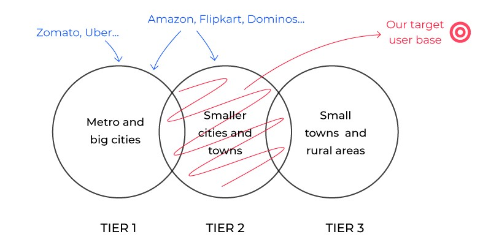
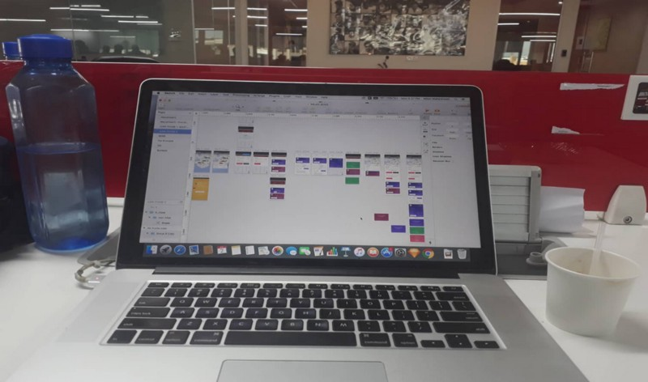
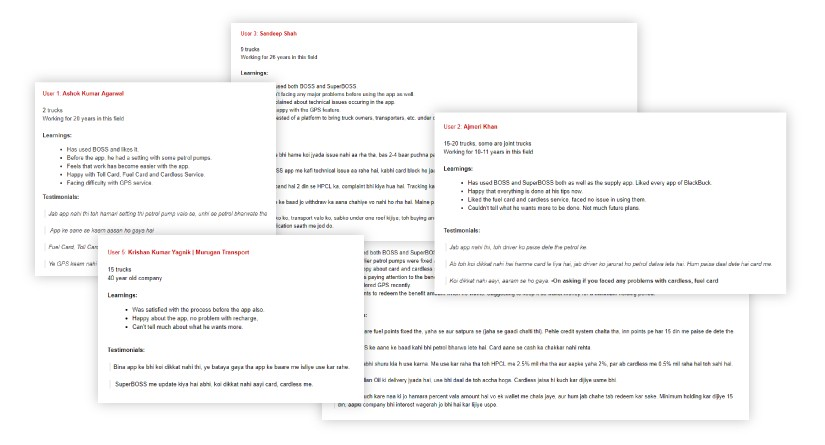

"You’re lucky to be working on a hundred-crore app which can significantly change the lives of truck owners in the country. Always remember, good design is the one which creates an impact."
"You’re lucky to be working on a hundred-crore app which can significantly change the lives of truck owners in the country. Always remember, good design is the one which creates an impact."
I still remember these words which my mentor told me in the initial days of my Product Design Internship. Throughout the summers, while I was there, they were a constant source of motivation and excitement for me to create an impact through design.
This article describes the design process I followed while interning with one of the largest logistics companies in India.
Blackbuck is a logistics solutions company in Bangalore which aims to simplify the freight process (transporting goods in bulk) via trucks. The company already has well-established Supply and Demand apps for shippers and fleet operators.
It also launched a mobile application BOSS in 2017 for fleet management i.e. for truck owners to manage their trucks when running with a load. The initial services offered were fuel card & toll recharge. The company’s vision was to simplify the lives of truck owners further and empower them with more services within a few taps through this application. So, they decided to introduce a subscription service SuperBOSS.
My task as a product design intern was to design SuperBOSS. The following section explains more about the concept of the product.
SuperBOSS was going to a subscription product that would simplify fleet management and provide additional services to the users. It was also a good opportunity for the company to expand its business domain.
Apart from fuel card and toll recharge, SuperBOSS was aimed to provide:
• Cardless fuel recharge by showing one-time password at the petrol pump.
• GPS system to track live truck location.
• Insurance and Credit services.
• Driver performance overview and direct contact through the app.
• Tyre providing service.
Digital product users in India are usually classified on the basis of location as:
Our target users were truck owners mainly in the tier 2 region with some parts of tier 1 and 3.
I gathered and studied the user data based on contextual inquiries (conducted by our research team on the ground) and telephonic user interviews conducted at the office. We targeted both the existing users of the BOSS app as well as the new potential users.
This data was going to be the driving force behind the design decisions. Data Driven Design, as it is usually referred to, was an important concept that I learned and applied throughout the design process to improve the experience of the product for the users.
With a good understanding of the users, the tasks supported by the system, and the context of use, scenario-based design was a good way to describe the product’s interaction from the users’ perspective.
Using paper-pen wireframes was an effective way to jot down ideas and quickly iterate on them before moving on to high fidelity pixels.
As the target user base was mostly truck owners of tier 2 region, who are generally not very tech savvy and use the mobile phone for a limited number of things, the main aim was to keep the interactions simple. There was no point of flashy interfaces. Instead, we needed the app to be functional and easy to understand.
The home screen of the app has 3 elements:
• Top Header showing the current balance and total savings made through SuperBOSS. This element was retained from the BOSS app so that the users feel comfortable that they are on a similar platform. Also, the data from ground research suggested that users were concerned about their money and were happy to see their savings upfront.
• Promotional banners showing new offers upfront. It was important in terms of business goals that the users don’t miss them.
• Services that SuperBOSS subscription provides.
This screen displays a list of the user’s trucks registered on the app.
• The top header is retained on this screen as well so that the user can see his balance right up before recharging.
• Data suggested that a user can have a maximum of 40–50 trucks. The list element is kept vertically small yet informative to avoid long scrolls for users with a large number of trucks simultaneously creating no issues for the users with fewer trucks.
• The list element has Fuel and Toll recharge buttons upfront with the card balance of each shown as well. This could have created a problem if the user has more than one fuel/toll card on a truck. But again the data suggested only 2% of the users have so. We included a horizontal scroll on the buttons for this case, which wasn’t a good design solution but its users were very less and the design was optimized for the 98% users. The next section describes how the recharge is done.
As an alternative to list, there is a map view of the trucks as well.
Tapping on the recharge buttons would bring up a bottom slider. The user just has to enter the amount and recharge is done! This was for the fuel and toll cards whose balances were shown on the My Trucks screen.
The Cardless Fuel Recharge, on the other hand, is recharge on the instant — The truck owner recharges money through Cardless and an OTP is sent to the driver number entered. He can show this OTP at fuel pump to fill the tank till it expires, after which the money automatically withdraws back to the account. The truck owner can also withdraw the money before the expiry time if he no longer wants to fill the tank using this service.
One important thing that we considered here was to show the benefits of recharging right upfront. The research data told us that users are happy to perform an interaction if they see a monetary benefit in it.
This screen is about a particular truck on the list. It has 3 elements:
• GPS view to track the path of the truck for a past duration.
• Recharge tab again serves the same functionality of fuel/toll recharges.
• Performance tab displays a scorecard of the driver’s performance. This is useful for the owner to judge how well his employee — the driver is doing.
The Profile Screen gives all the information the user might need relating to his account — transaction history, benefits and redeeming, language, etc.
The Add Money screen is to be used to recharge the SuperBOSS account. Earlier this was proposed to be a part of the Profile Screen only, but it was concluded in a meeting with stakeholders that recharging his app account is an important user action in terms of business goals. Hence, it got a separate section on the bottom navigation from where it can be easily accessed.
The app then went in the development phase and was released in versions till each designed functionality was included in the app. Usability testing was being done throughout this phase using mobile analytics platform Appsee. The main motive was to know if users are able to understand the interactions, what are the points of user frustration, how are first time users behaving, etc.
A few points that needed to be addressed after the usability testing:
• The GPS service was a pain point for many users. The app was crashing on several occasions and on others it was showing no truck, just the map.
• A few first-time users found it difficult to access the bottom slider for recharge. Instead, they went to the truck details each time for recharging and then had to come back to see the balance. Maybe the task should’ve been more self-explanatory.
• A few technical issues were occurring like the card was blocked a few times, money didn’t transfer to the fuel card although user recharged it.
I spent my remaining time in analyzing the post-launch data to measure the impact my design has created on users as well as business.
I collected the numbers from the product analysis team for parameters like active users, transactions, recharge values, etc. for both BOSS(data before my internship) and SuperBOSS( data of first 10 days after the launch).
I conducted a few user review interviews with the help of telesales team to know the reactions of the truck owners, the change brought in their work lives after using the product, if they’re able to achieve their goals, etc.
Here’s what I concluded after the analysis:
I conducted a few user review interviews with the help of telesales team to know the reactions of the truck owners, the change brought in their work lives after using the product, if they’re able to achieve their goals, etc.
• A significant proportion (around 30%) of existing customers subscribed to the SuperBOSS product in the first 10 days. There has been a considerable increase in new customers as well.
• Gross recharge value through Cardless service crossed 2.5 Crore (25 million) rupees.
• Nearly 80% of subscribers requested for the GPS system. The number of requests on Tyre, Insurance, and Credit was also considerable.
• 4/5 users believed that their work has become much easier after using the app. They didn’t have to worry about giving cash to driver, loading and unloading delays, dealing with fuel pumps, etc.
• The average daily revenue increased significantly in the fleet management department.
The two-month internship was a great learning experience for me. I got to know the insights of user research, data-driven design, creative teamwork, usability testing, and a lot of things which were not possible when doing freelance or concept projects on my own.
For beginner designers like me, when you see your design actually solving real-world problems and benefiting the company, it significantly increases your self-confidence. You believe that the stuff you design can bring a change in the social and business aspects of people.